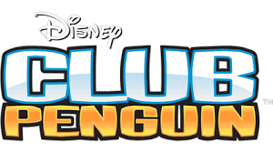

Club Penguin
Saudações amigo antártico! Venha conhecer Club Penguin!
Club Penguin é um jogo online onde pessoas de diversos países se encontram.
Club Penguin foi um MMO (Massively Multiplayer Online Game), envolvendo um mundo virtual que continha uma série de jogos e atividades online.
Jogo é muito alegre cheio de animação e aventura para você explorar .
Vem conhcer um pouquinho da rotinha da jogabilidade do Club penguin !!

Jogabilidade
O jogo é um MMO onde vários jogadores se encontram e tentam descobrir o que a por trás da história.
Atráves das descobertas você descobrirá o que fazer e ao longo do caminho irá fazer novas amizades
Tem desafios, diversão, aventuras, temas abordados de acordo com o mês e muita empolgação.
No jogo você decide o que será e também o que irá fazer então é escolha sua invocador .
Ops não esqueça de vestir o casaco devido a temperatura e muito frio
Apenas com o o mouse você conseguirá jogar, não e necessário teclado :D
na barra de falar do jogo você pode digitar alguns comando pegando no site comandsclubpenguin.
Divirta-se e aproveite.

A História do Club Penguin
O Club Penguin foi criado em 2005 em uma empresa canadense – New Horizon -, localizada na cidade de Kelowna
Inicialmente os criadores do projeto, Lance Priebe e Lane Merrifield buscava um ambiente online que fosse seguro pra se divertir
O crescimento foi tão grande que, após um tempo, a New Horizon deu origem à Club Penguin Enterntainment
com toda equipe dedicada a manter a dinâmica do Club Penguin e trabalhar no desenvolvimento de melhorias para o produto.
Em 01/agosto/2007, a Club Penguin Entertainment foi adquirida pela The Walt Disney Company e o Club Penguin passou a ser
considerado uma propriedade Disney. Obtendo lucros o jogo foi sendo priorizado por atualizações valorizando a empresa e aos desenvolvedores.
através desse fato, o MMo além de ser mundialmente reconhecido a sua empresa ganhou um prêmio em 2010 de MMO do ano
Muitos desenvolvedores tentaram criar algo parecido mais não conseguiram o club foi o único MMo que ganho premiação no ano de 2010
e essa é a história do Club Penguin.